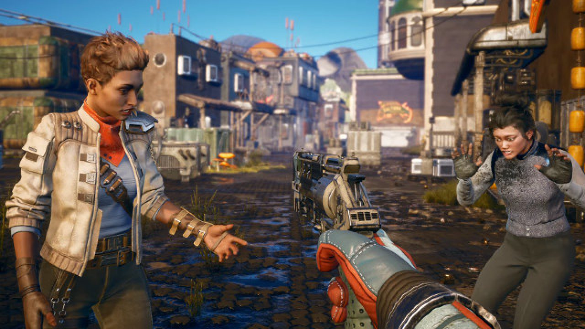

Vous m'écoutez ?

Mon doigt a glissé...
À l’intérieur de Groundbreaker, vous trouverez le Medbay. C’est là que vous pouvez rencontrer Ellie en train de se quereller avec une docteure à propos d’une patiente, Jessie. Face au refus catégorique du membre médical, car Ellie n’est pas autorisée à entrer dans la zone de quarantaine, vous pouvez lui proposer de régler le problème pour elle. En achetant une cartouche d’identification Mardet et en vous déguisant pour pénétrer dans la zone d’accès restreint, vous découvrirez ce qu'il s'y cache.
Terminez la quête, qui implique également de parler à Udom Bedford, et Ellie pourra rejoindre, ou pas, votre équipage.
Tirage rapide : Ellie dégaine rapidement son pistolet et envoie une série de tirs de précision sur sa cible.
Ellie est une chirurgienne devenue pirate avec une vision blasée de la vie. Apathique et décontractée, elle juge rarement les gens pour leur mode de vie ou les décisions qu'ils prennent. Lorsqu'elle travaille comme mercenaire, elle valorise le professionnalisme et n'aime pas nouer des relations ou partager ses émotions. Elle n'aime pas non plus les formalités administratives, la bureaucratie ou toute autre chose qui pourrait nuire à son indépendance.
Vous m'écoutez ?
Mon doigt a glissé...